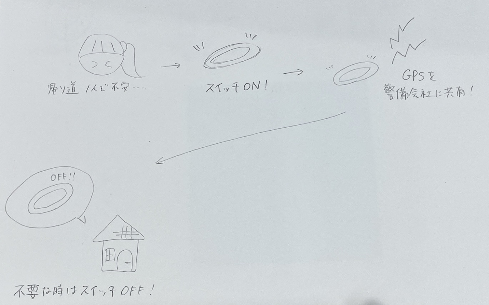

夏季課題
夏休みにいろいろと世の中を観察し、社会に存在する大小様々な課題を発見し、ビジネスを通して解決したい課題を考えて、スケッチをアップする。
簡易見守りサービス
夜遅くに帰宅すると周囲が暗いことや人通りが少ないことで、ニュースの事件を彷彿として不安になる。
殺人、殺人未遂、重傷害、性犯罪などは未だ無くならないので、そんな中でも事件を抑制して安心できるようなアイテムがあれば良いのではないか。

ブレスレットやマスコットなど外から確認しやすいアイテムで見守りシステムを使用していると他の人から分かるようにする。
緊急ボタンを押したり、異常な心拍数や強い衝撃を受けると警備会社に信号が届く！
スイッチを切るとGPS機能が停止するのでプライベートも守られる。
収益のあるイラスト掲載サイト
友人がイラストで収益を得たいけど依頼を受けて描くこと以外であまり手段がないことで悩んでいた。
人とコミュニケーションを取ることが苦手なので依頼の取引連絡が難しいらしい。
SNSなどに掲載して見てもらえても収益には繋がらず、方法がないと話していた。
また、その友人は病気であまり外出ができないためアルバイトをすることができない。
そういった人達が働く機会がまだ不十分であると思った。
依頼が無くても閲覧数などに応じて報酬が得られるようにする。
また、そのイラストを使用したグッズを注文できるようにして、その販売数に応じて報酬が入る。
イラストの権利ごと販売するわけではないので、1枚のイラストで継続的に利益を得ることができる！